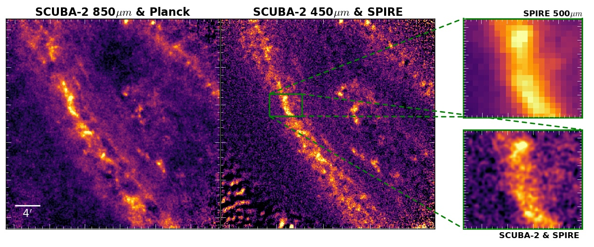

HASHTAG: HARP and SCUBA-2 High Resolution Terahertz Andromeda Galaxy Survey
HASHTAG is a new Large Program on the JCMT to observe the entirety of Andromeda with SCUBA-2 at 450 and 850μm,
and we will also observe selected regions in CO(J=3-2) with HARP. The project will start in summer 2017 and will
use approximately 280 hours to complete observations. Our survey will make it possible, for the first time,
to investigate dust, the ISM and star formation from the scale of a galaxy down to sub-GMC scales. With a resolution
of approximately 25 parsecs, we will be able to study Andromeda with five times better resolution than studies based on data.
The figure below shows the results of our pilot SCUBA-2 observations, and indicates the image quality that will be obtained with the full survey.

The 850µm (left) and 450µm map (middle) from our pilot programme
which observed a 30´ region of M31. For both bands, we use data from either Planck or SPIRE to add in large-scale structure.
The improvement in resolution from 36˝ for SPIRE 500μm to 7˝ for SCUBA-2 450µm is clearly apparent in the zoomed plot.
To aid visualisation we have convolved the SCUBA-2 maps with a Gaussian with the same FWHM as the PSF. The full sensitivity is
only achieved in the central part of the image.
{kind=link}
{kind=link}